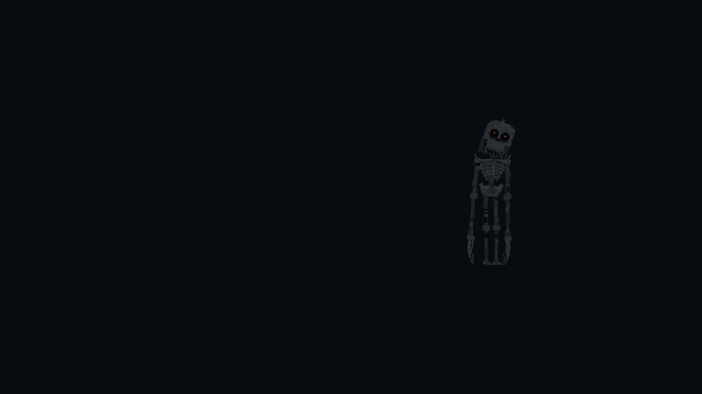
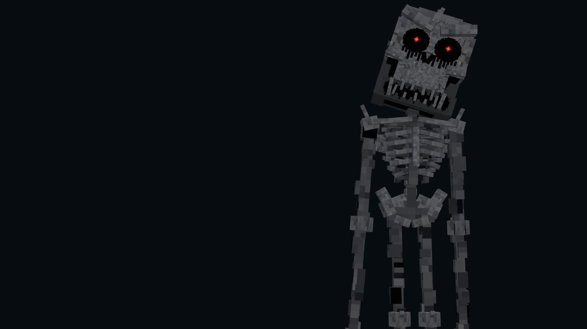
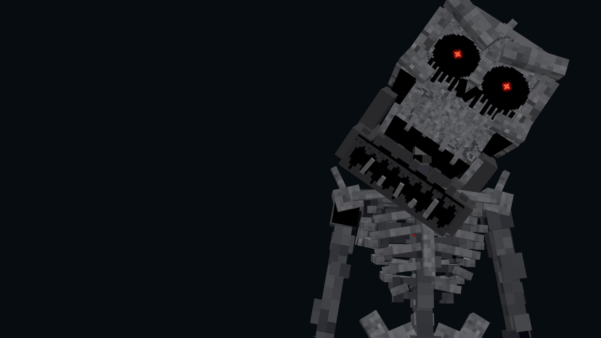
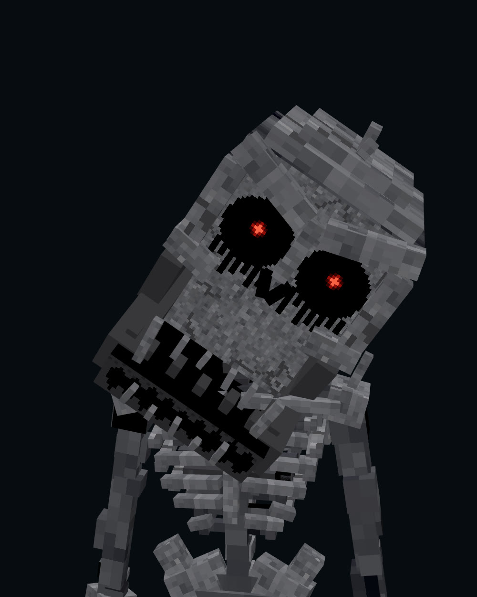
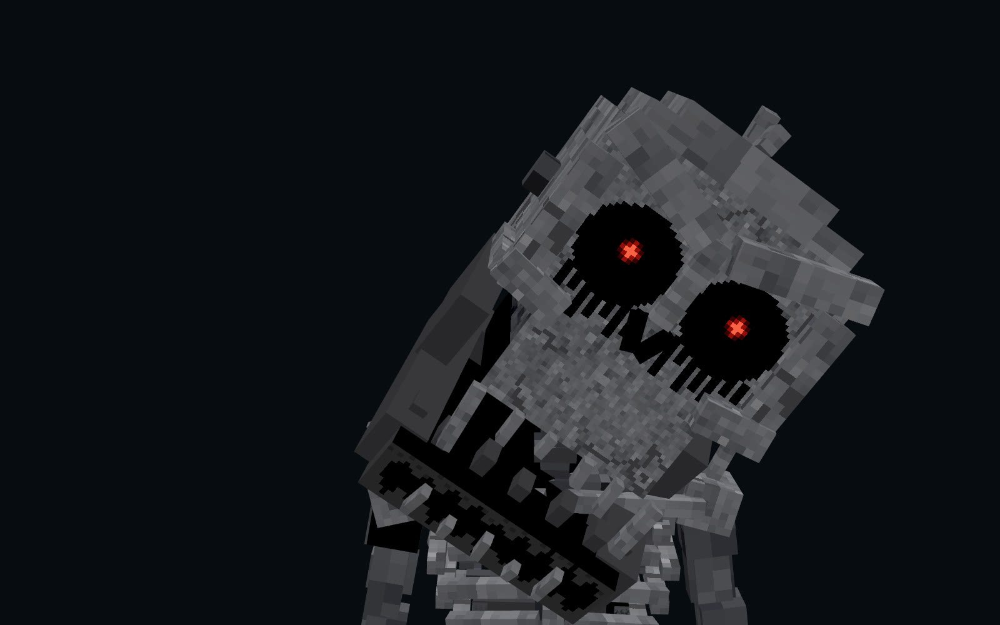

Algo te escucha
Un add-on de terror para Minecraft Bedrock. Se detiene si lo miras.
Se acerca cuando no miras.



-
Si lo miras, se detiene.
Ladea la cabeza y abre la mandíbula, despacio. Espera a que parpadees.
-
Si le das la espalda, te sigue.
Abre puertas de madera y evita la lava. A menos de 36 bloques, corre.
-
Si te alcanza, se apaga todo.
Una voz dice
i see you
y pierdes cuatro corazones. Nunca te mata.
Encontraste una página que no escribiste.
No lo escribiste.
La página ya estaba abierta. La tinta sigue húmeda, pero la letra no es tuya.
Cuenta las puertas de tu casa. Hay una que no recuerdas haber cerrado. Esa es la que usa.
Al margen, con otra letra:
Úsala cuando esté cerca. Arde, y se va. Una vez por noche.
Antes de verlo, lo oyes.
- Pasos que no son tuyos.
- Una antorcha que se apaga sola.
- Una silueta lejos, que se esfuma si la miras.
- Después, ya no avisa.
Más cerca cada noche.
Tres avisos antes de verlo
Pasos, una antorcha que se apaga y una silueta lejos. Luego aparece.
Cada noche, más apariciones
La primera noche casi no lo ves. Cada noche que sobrevives, vuelve más veces.
La página lo ahuyenta
Arde y se va, pero solo una vez por noche. Elige bien el momento.
Un cuerpo nuevo
Cráneo con colmillos, garras, ojos que brillan en lo oscuro y humo negro al moverse.
Tu casa está a salvo
Ya no rompe tus construcciones y la cabaña nunca aparece encima de tu base.
Duele, pero no mata
Su golpe quita cuatro corazones y nunca te deja a cero.
Antes de descargar
- Un archivo .mcaddon
- 2,6 MB
- Minecraft Bedrock o superior
- 1.21.50
- Experimentos que activar
- Cero
Windows
Doble clic en el archivo. Minecraft importa los dos packs.
Android y iOS
Ábrelo con Minecraft desde tus descargas.
Xbox, PlayStation y Switch
Súbelo a un Realm desde PC o móvil y entra desde la consola.
Después, activa los dos packs en un mundo de supervivencia o aventura.
Lo que más preguntan
¿Funciona con amigos?
Sí. En multijugador y Realms elige a cualquiera de los jugadores, no solo al anfitrión.
¿Tengo que activar experimentos o Beta APIs?
No. Importa el archivo, activa los dos packs en tu mundo y listo.
¿Me puede matar?
No. Su golpe quita cuatro corazones, pero nunca el último.
¿Rompe mi casa?
No. Abre puertas de madera, pero no rompe bloques de tus construcciones.
Minecraft dice que el pack ya existe
Borra la versión anterior en Ajustes › Almacenamiento y vuelve a importar el archivo.
¿En qué idioma está?
Español e inglés. El juego usa el idioma que tengas puesto.
